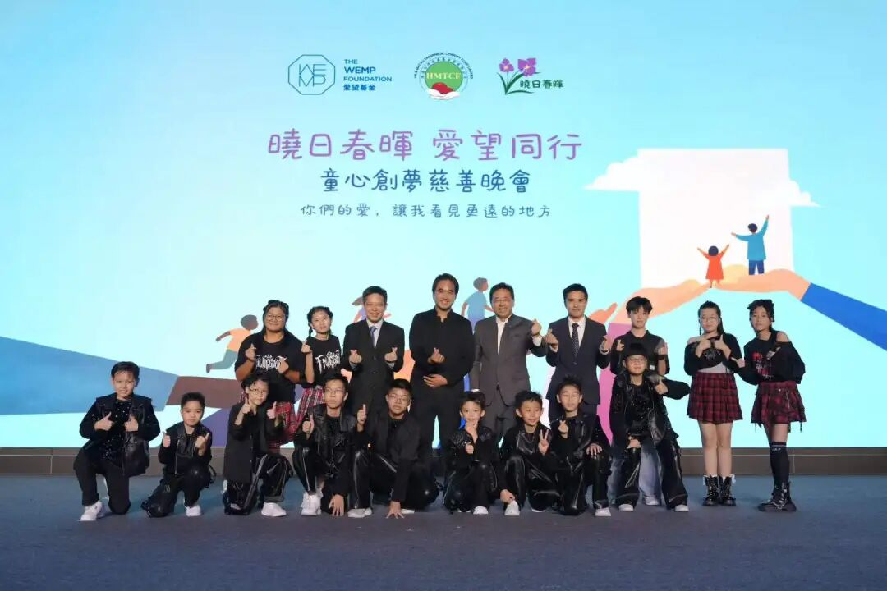
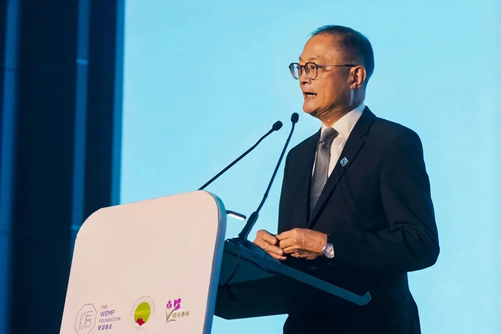
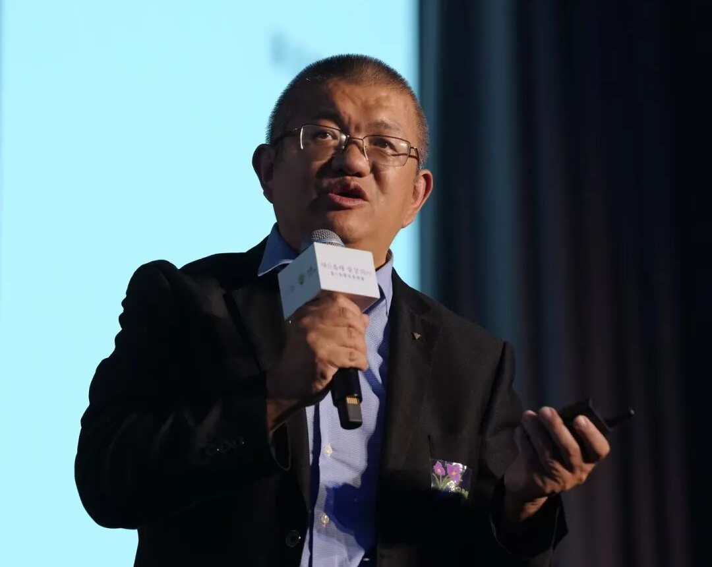
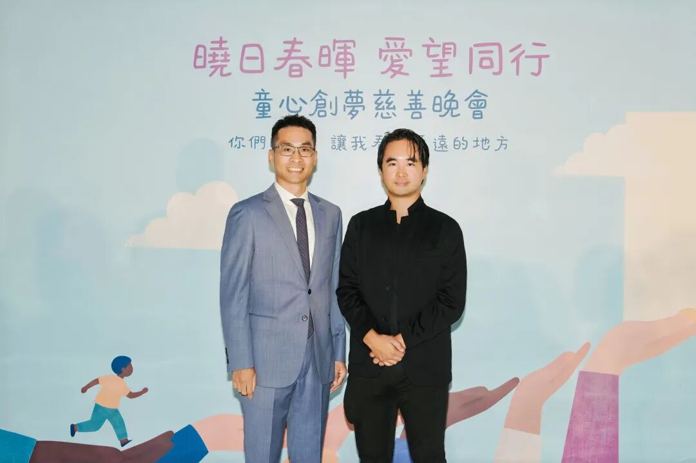
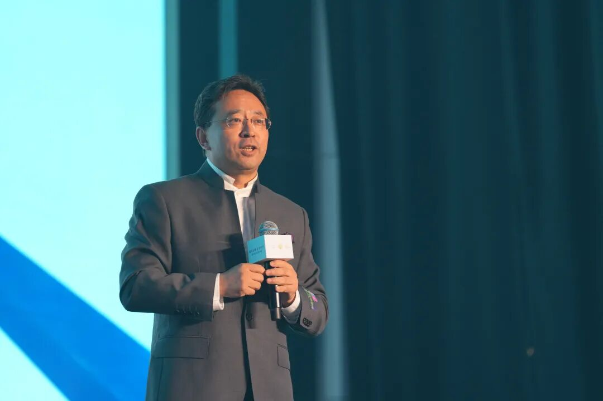
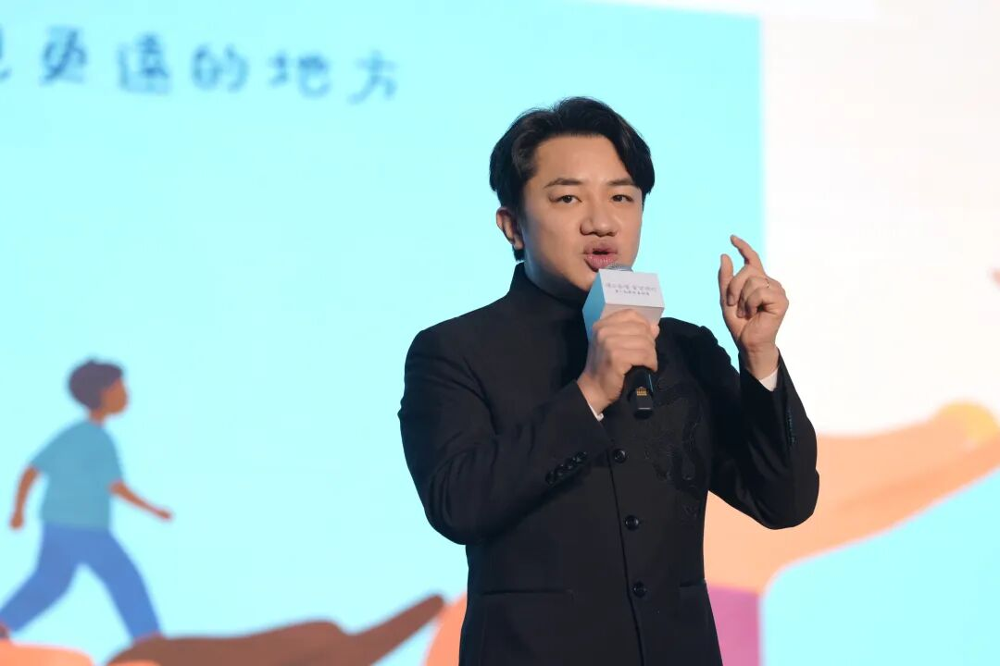
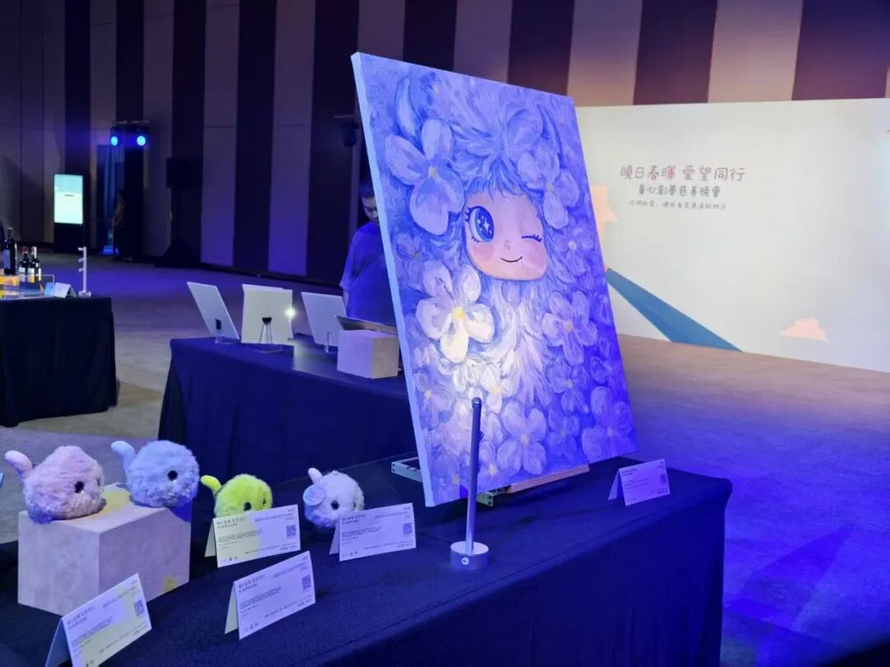
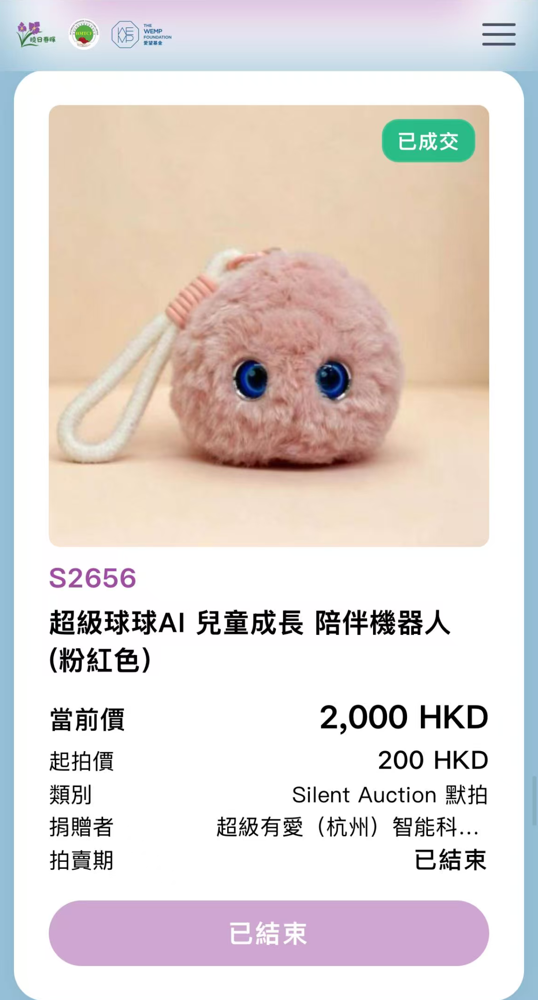

9月17日晚香港，暖意流淌。由晓日春晖公益与爱望基金联合主办的「童心创梦慈善晚会」隆重举行。超级有爱创始人元晓帅博士应邀出席，并带着一份特别的捐赠品走进了这场爱心之约——超级球球 AI 儿童成长陪伴机器人。

一场为儿童而聚的晚宴
本次晚会为童心创梦慈善晚会，以『晓日春晖 爱望同行』为主题，医务卫生局局长卢宠茂先生、政务司司长陈国基先生、爱望基金创始人郑志刚博士、晓日春晖公益发起人翟普博士、知名香港艺人王祖蓝先生等嘉宾出席并致辞。
两个主办方的公益理念不谋而合又互为补充：晓日春晖公益长期专注于数码科技教育、电脑捐赠与乡村振兴，从「知识」层面帮助有需要的学校和学生；爱望基金则深耕儿童精神健康、正向教育与心灵疗愈，滋养「心灵」的层面。「知识 + 心灵」的双翼，正指引着更多力量投向儿童成长的事业之中。
而这份对儿童成长的共同关切，正是我们此行最大的共鸣。





超级球球，带着使命登上默拍台
晚会特别设置了慈善默拍（Silent Auction）环节，涵盖艺术收藏、时尚精品、珍稀体验、电子产品等多个类目的爱心拍品，均由社会各界人士无偿捐赠，所有善款将用于支持儿童公益项目。
超级有爱此次无偿捐出4 款不同配色的球球参与默拍，分别为超级球球 AI 儿童成长陪伴机器人精灵版不暴燥、小话痨、小坚强、不拖拉。它们毛茸茸、圆滚滚，有一双会说话的大眼睛——正如它们在千万个家庭中扮演的角色一样：用 AI 的温度，陪伴孩子成长。
更重要的是，超级球球此次能够作为捐赠拍品登上默拍台，源于它与晓日春晖公益、爱望基金的理念高度同频——大家都在为同一件事努力：守护儿童的心理健康，守护儿童的安全成长。当 AI 陪伴遇上「知识 + 心灵」的公益愿景，这场相遇，从一开始就是一场双向奔赴。

4,300 港元，四颗球球都有了新家
默拍期间，四个小家伙牵动着许多人的心。
最终，最终它们独立上拍、全部成交，合计拍出 4,300 港元。其中治愈粉款以 2,000 港元成交，成为四颗中的最高价。每一口报价，都是一份对儿童公益的善意；每一次落槌，都让科技的温度多传递了一程。

科技的温度， 陪伴承载
从为特殊教育学校送去关注，到为乡村孩子点亮代码之光，这场晚宴让我们看到：公益从来不是宏大的口号，而是一件件具体的小事，是一颗颗具体的爱心。
超级球球诞生的初心，就是「陪伴」二字。这一次，它以公益使者的身份完成了一场特别的旅程——我们由衷感谢拍下它的爱心人士，您带走的不仅是一件科技产品，更是一份与我们一起守护儿童成长的约定。
晓日春晖，爱望同行。
一颗小球的旅程结束了，
而爱与陪伴的旅程，永远在进行时。
— 超级有爱 · 超级球球 —
关注我们，见证 AI 陪伴的每一步